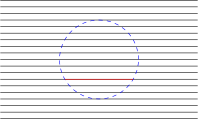

Often in mathematics there is an obvious notion of a “subobject”: given a structure on a set there is a simple way to restrict it to a subset, such that the subset can be said to have the same structure. For example, the structure on a group is the identity, inversion, and multiplication; if there is a subset containing the identity and which is preserved under inversion and multiplication, then we have a subgroup. Or for a topological space , any subset has a topology given by intersection of open sets of with . The structures on the subset can often be characterised by the fact that they make the inclusion map a structure preserving map (group homomorphism and continuous map respectively for the two examples).
In the case of manifolds however the definition of a submanifold is not as trivial and there are several notions that have strong claims for the title. To complicate matters, the notion that is the most widely taught and used (embedded submanifold) is not the one that is most appropriate for Lie group theory (immersed submanifold). Further, the two perspectives of the first paragraph, restriction and inclusion, each have their advantages. It is perhaps more intuitive to work directly with a subset, but a manifold structure is an atlas, and it unpleasant to consider different atlases on the same subset. The alternative is to work with inclusion maps. Then different manifold structures of the subset are realised as inclusion maps from different manifolds with the same image.
Definition 2.1. [War83, Def 1.27, Rem 1.33],[Sha97, Defs 1.1.36, 1.1.40, 1.2.10, 1.2.21]
Let be
a smooth map of manifolds.
This is a lot of terminology, but it harmonises the definitions in Sharpe and Warner, see below table. It is in fact a strict hierarchy: each type of submanifold is a subtype of the previous.
| Sharpe | Warner | |
| immersed manifold | immersed manifold | |
| immersed submanifold | submanifold | |
| weakly embedded submanifold | ||
| plaque submanifold | submanifold | |
| embedded submanifold | regular submanifold | imbedding |
| proper submanifold | proper submanifold | proper submanifold |
These definitions are given in terms of a smooth map into . So the question from the other perspective is whether the manifold structure of is determined or can be recovered solely from the image . There are simple examples that show that not even the topology of is determined for an immersed submanifold: consider the subset . We can split this into a line and two rays in two ways. Therefore immersed submanifolds must always be given with the immersion .
Let us give a construction that can construct an atlas on a subset .
Definition 2.2. [Sha97, Def 1.2.1,1.2.2,Thm 1.2.7] Given a chart , the connected components of are called plaques. The intersection of open sets of with plaques gives the submanifold topology. In general the submanifold topology is finer (has more open sets) than the subspace topology [Sha97, Def 1.2.4]. For any plaque , if lies in an -dimensional affine subspace of then we call this plaque flat and a plaque chart of . If there is a collection of charts of that cover such that all components are flat plaques we call a plaque submanifold of ; the plaque charts constitute a smooth atlas.

The plaque manifold structure on makes the inclusion map into a weak embedding [Sha97, Thm 1.2.7]. Unfortunately, the reverse is not true. Consider as a countable collection of spheres and take to be the map that embeds the th sphere as . Overall one has a sequence of non-overlapping spheres decreasing in size with the origin as a limit point. In particular any neighbourhood of the origin must contain a sphere as a connected component of . But a sphere cannot be a flat plaque and therefore is not a plaque submanifold. It would be interesting to consider relaxations of the conditions to be a plaque submanifold.
The difference between plaque submanifold and embedded submanifold is that there is a covering of by open sets of such that each chart has a single flat plaque. This means that there can be no ‘strange’ limits arising from the immersion. For embedded submanifolds the subspace and submanifold topologies coincide [Sha97, Prop 1.2.9]. The example of the dense wrapping of the line around a torus is the classic example of a plaque submanifold that is not embedded.
Finally, by [Sha97, Thm 1.2.11] proper submanifolds are automatically embedded, so we have a strict hierarchy of conditions. The standard example of an embedded submanifold that is not proper is . We see that a sequence in may converge to a point of .
These constructions answer the question of how to endow a subset with a manifold structure. There is the possibility however that there are different constructions. Warner addresses these concerns with the following theorem:
Theorem 2.3. [War83, Remark 1.33]
TODO: Revise this section, include proofs as necessary.
It is common in a course on manifolds to study vector fields and their integral curves. The key local result is
Theorem 2.4 (Picard-Lindelöff). Let
be a smooth time-dependent vector field. Assume .
Consider
the system of ODEs .
For any
there exists a
such that there is a unique solution smooth solution on
with .
Moreover, for any
there is an open neighbourhood ,
and smooth map
such that
is the unique solution with initial condition .
[Sha97, Theorem 2.1.1][IL, Theorem 1.2.1]
If one has a smooth vector field on a manifold, then this theorem provides for the existence of integral curves of the vector field in every coordinate chart, and uniqueness means that they can be patched together to give unique maximal integral curves through every point.
We will need a generalisation of this result that deals with multiple vector fields. To motivate why this is geometrically interesting and not just generalisation for its own sake, consider a submanifold inside . At each point we can consider the vector subspace . At least locally, we can describe these subspaces as the span of independent vector fields. The natural question is the converse: given a set of independent vector fields on , does there exist a submanifold whose tangent space is their span? For a single vector field, the answer is affirmative, namely the integral curve.
Definition 2.5. An -dimensional
distribution
on
is a choice of an -dimensional
subspace
of
at every point .
It is called smooth if every point has a neighbourhood and smooth vector fields
that span the subspaces. It is called integrable if every point has a coordinate neighbourhood in
which the distribution is spanned by coordinate vector fields.
A set of vector fields is called algebraically involutive if their Lie brackets are contained in their
span. Two vector fields with the same span are either both algebraically involutive of neither is.
Therefore algebraically involutive is a property that is defined for Distributions.
A connected -dimensional
submanifold
is called an integral manifold of
if at every point .
[Sha97, 2.2.1,.2.2.2,2.3.2]
If a distribution is integrable, then every point has an integral submanifold through it, just by taking a coordinate plane in an appropriate chart. The important theorem is Frobenius’ theorem [Sha97, 2.4.1], which states a distribution is integrable if and only if it is algebraically involutive. The proof inductively applies the Picard-Lindelöff theorem.
TODO: Example of spheres in showing that you might not have global vector fields.
There is also a formulation of Frobenius’ theorem in terms of differential forms. We can define the annihilator of a distribution as the algebraic ideal generated by the one-forms such that for all . By this we mean all -linear combinations and wedge products. Conversely, the kernel of an algebraic ideal of differential forms generated locally by independent one-forms is a distribution. The theorem then says that is integrable if and only if the ideal contains all its exterior derivatives (it is a differential ideal). The proof comes down to the simple formula
TODO: Sharpe does foliations in general, and the argument look a lot like the arguments Warner uses for Lie subgroups. I think it might be advantageous to follow Sharpe here and separate what is truly manifold theory from Lie theory.
TODO: I don’t know where else to put this theorem. Ah, Sharpe’s submanifolds implies weakly embedded, so have this property already. There is a concern that if we have a smooth map that happens to lie in a submanifold , then is the induced map given by restriction on the codomain a smooth map with respect to the manifold structure ono the submanifold. The following theorem of Warner answers this affirmatively:
Theorem 2.6. [War83, 1.62]
Suppose that
is ,
that
is an integral manifold of an involutive distribution
on ,
and that
factors through ,
that is, .
Let
be the (unique) mapping such that .
Then
is continuous and therefore .
Eigenvalues and eigenvectors are ubiquitous in linear algebra. If we are working over , then every linear endomorphism (linear map from a vector space to itself) has an eigenvalue (root of the characteristic polynomial) and every eigenvalue has an eigenvector . If we can find a basis of eigenvectors, then with respect to this basis the linear operator is a diagonal matrix. In general however, there may be fewer eigenvectors than the dimension of the vector space. A standard result in linear algebra says that every matrix is conjugate to a matrix in Jordan normal form, unique up to reordering of the blocks.
Going further, we may ask what can be said of two linear endomorphisms . The key observation is to consider commuting operators. If and commute then preserves the eigenspaces eigenspaces of :
Therefore restricts to an endomorphism on each of the eigenspaces of . Imposing different conditions on restricts the possible decompositions of . For example, if is diagonalizable (so decomposes as the direct sum of the eigenspaces of ) then on each eigenspace of we can choose a basis that puts into Jordan normal form. Hence and can simultaneously conjugated to normal form. Or if is diagonalizable and has no repeated eigenvalues, ie its eigenspaces are one dimensional, then these must also be eigenspaces of . Hence and are simultaneously diagonalizable.
This argument can be applied inductively to a finite set of pairwise commuting endomorphisms. It also extends to a commuting family of operators , a linear subspace of such that all operators are pairwise commuting. These are effectively equivalent, since a family is pairwise commuting if and only if a basis is pairwise commuting. Likewise, is a simultaneous eigenvector for if and only if it is a simultaneous eigenvector for every operator of . The eigenvalues are not completely independent:
We understand the eigenvalue of to be a linear function
Understood in this way, it is more common to call a weight of the commuting family , a weight vector, and the set of vectors with the weight space [Hal15, Definition A.14].
As an aside, the descriptor “weight†should probably replace “eigen-†even in the single operator case. Consider an operator with a -weight vector and a -weight vector . Then of course , which is a weighted sum.
We finish with an example. Let be the set of diagonal matrices. Then a basis for this family is , with at the th position on the diagonal. is a -weight vector of while all vectors of are -weight (in the kernel). These are all diagonal (in particular simultaneously diagonal) so there should be a basis of weight vectors. Indeed, this is just the standard basis . The weight of is the linear form
because .